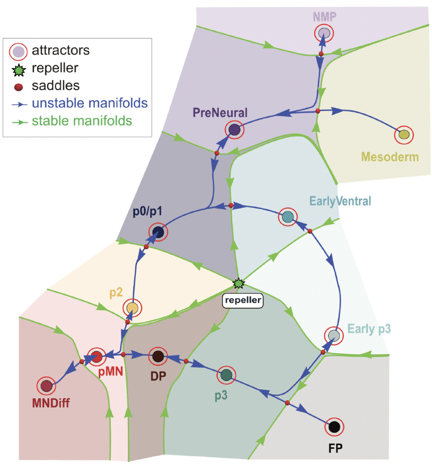

Quantifying Waddington's Landscape
I have written before about how two conceptual frameworks have shaped our thinking about cell fate, Waddington's epigenetic landscape and Davidson's gene regulatory networks. We have recently published a study that uses some of these ideas. Since the paper turned out to be somewhat of a behemoth combining developmental biology, dynamical systems theory and bioinformatics, I thought it might be useful to write a short summary.
Both Waddington's landscapes and Davidson's GRNs were conceived as dynamic, however both are routinely reduced to static pictures. Single-cell transcriptomics has further exacerbated this problem rather than solving it. We are all used to seeing UMAPs illustrating in extraordinary detail the states of thousands of cells, but the data are snapshots. The dynamics that allow cells to flow between states have to be inferred, using a variety of pseudotemporal ordering and trajectory inference approaches. Similarly, the gene regulatory networks that are often inferred from such data are hairballs of interactions that lack dynamical and causal insight and fail to provide the clarity the original proposals from Davidson and colleagues were seeking.
Our new paper with David Rand at Warwick, driven by Marine Fontaine (theory) and Joaquina Delás (experiment), is an attempt to take a different approach and close a gap in the current literature. We call the approach Dynamic Landscape Analysis, DLA. The aim was to build a quantitative landscape from single-cell data that predicts what cells do under conditions the model had not seen.
Waddington's landscape metaphor can be described in mathematical terms. In fact, Waddington began to explore this connection in correspondence with the mathematician René Thom in the 1960s. In this view, cell fates correspond to attractors of a dynamical system generated by the gene regulatory network. Noise turns each attractor into a cloud of expression profiles, which we called an attractor cluster. Between two adjacent attractors sits a saddle, the mountain pass between the neighbouring valleys of the landscape. The pass has a downhill direction, running from one valley to the other. A cell reaching a saddle is drawn towards the downhill direction so once it is nudged it descends into one valley or the other.
Transitions from one cell state to another happen when a signal destabilises a state, so that attractor and saddle collide and the state disappears (called a fold bifurcation), or when an attractor becomes shallow enough that fluctuations carry a cell over the saddle. In both cases the route the cell then takes is called the saddle's unstable manifold. That is the valley bottom in Waddington's picture, but in dynamical systems theory it is a defined geometric object not just a metaphor.
Getting from scRNA-seq to this quantitative formalism turned out to be harder than it sounds. Standard pipelines for analysing scRNA-seq select thousands of highly variable genes, most of which are not involved in controlling cell fate decisions, then reduce dimension with PCA and UMAP. The resulting space depends on preprocessing choices and is dominated by features irrelevant to the decision. Worse for our purposes, nonlinear projections do not preserve the smoothness of trajectories. To address this, we developed a method to construct an effective gene space of 50 to 100 genes by starting from three or four marker genes and clustering outward, adding genes that distinguish the clusters found at each step. This principled approach to building gene sets results in informative collections of genes that are roughly 30 times smaller than the full set of variable genes. These turned out to be small enough that the analysis could stay in gene space. We used linear discriminant analysis for visualisation, because it separates clusters without introducing bends or folds.
To prototype the approach, we used mouse ES cells differentiated to ventral neural fates with the Shh agonist SAG: 40,000 cells across 10 time points from Rory Maizels's time-resolved dataset, together with three independent flow cytometry series at four SAG concentrations, giving protein-level measurements of the same system under controlled signalling. The method recovered the states we expected, from NMPs and PreNeural cells through to pMN, p3 and floor plate. It also picked out intermediate cell states that had been less well characterised, including an early p3 state and an Olig2/Nkx2-2 double-positive state sitting between pMN and p3. Transition routes were identified by fitting splines through the transitioning cells and averaging gene expression in tubular neighbourhoods along them. The result is a fixed path through gene expression space. Position along the path tells you how far a cell has progressed towards its new state, but not how long it has taken to get there. This is important because cells can sit near a shallow attractor for a long time before escaping and then move quickly.
Each cell fate decision is then described by an equation, a so-called normal form, taken from catastrophe theory. These equations describe the landscape, the position of the attractors and saddles, with a handful of parameters. Changes to these parameters represent the effect of signalling. These parameters are phenomenological. They do not stand for particular biological rates or specific genes. This is the point. Instead of trying to model molecular mechanisms, for which we have insufficient information, the goal is to describe the cell fate decisions themselves. The justification for using normal forms is genericity. The intuition is simple: balancing a pencil on its point is possible, but it requires exquisite adjustments, the slightest disturbance destroys it. Behaviours that survive perturbation are the ones we generally see, while those requiring exact fine tuning we don't. Genericity is the formal version of this distinction: within a broad class of systems, only a limited set of behaviours persist when perturbed, everything else requires fine-tuning and would be unlikely to be biologically robust or evolvable. Applied to cell fate decisions this constrains the possible landscape structures.
By varying a single parameter, and barring exceptional circumstances, attractors are lost through fold bifurcations or transition routes change through flip bifurcations (in which an unstable manifold switches from one attractor to another). This means that there are only a small number of ways for a cell to make a decision. We used the experimental data to find values for the parameters of the models using an optimisation method, Approximate Bayesian Computation. This gives a range for the parameters rather than a point estimate. We could then show that the parameterised models reproduced cell state proportions across SAG concentrations and time points and it predicted time points to which it was not fitted.
This is a different ambition from conventional GRN modelling. Rather than attempt to write down all the required gene-gene interactions, most of which we do not know, we described the decision at the level of cell behaviour itself. Moreover, the same normal form will apply to any regulatory mechanism that produces the same bifurcation. This opens the possibility of universality classes of cell fate decision, defined by the geometry of the decision rather than by the identity of the transcription factors implementing it.
We found that most decisions appear to be represented by flip bifurcations. Cells leave the upstream state along a shared route and diverge only afterwards, this may be related to the phenomenon of multi-lineage priming that has been documented in several cell fate decision studies. For example, on exit from NMP, one group of cells shows increased Nkx1.2 and Irx3 towards PreNeural and the other Tbx6 and Foxc2 towards mesoderm, having crossed the same saddle.

We tested the model with perturbations that had not been used in fitting the parameters. Delaying SAG by 24 hours diverted cells from an FP fate and committed cells to pMN. Removing SAG after 24 hours did not result in cells reversing their differentiation, so the landscape does not revert and commitment is irreversible. Strikingly, we found that cells could reach one fate, p3, by two routes, through early p3 or through Olig2-expressing pMN and the double-positive state, giving the landscape a circular topology. The same architecture, circularity included, appears in human trunk organoids patterned by notochord-derived Shh, where more notochord tilts the PreNeural flip towards ventral fates.
Taken together, the analysis changes the picture of morphogen patterning. Rather than cell fates being read off from thresholds in a monotonic gradient, as a typical textbook picture might imply, the model indicates cell fate decisions arise via a series of branching decisions. This means morphogen patterning of the neural tube has a hierarchical and dynamic component that the French flag model does not capture.
There are practical applications for this approach. Knowing where the decision points are and which parameters control the decisions allows differentiation protocols to be designed rather than found by trial and error.
And the wider point is one we have made previously. With a fitted model the landscape stops being a metaphor and becomes an object you can perturb and falsify. Clonal lineage tracing is the obvious next test. The hierarchical decision tree predicted by the dynamical landscape predicts a hierarchical structure to a lineage tree, and this is indeed what we are beginning to find.